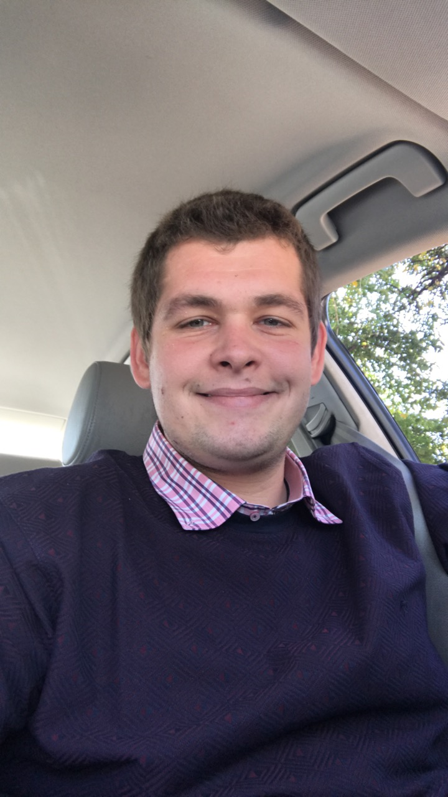

Ludmil Marinov

Summary
Self learning and improving enthusiast! I have worked on many side
projects, with no proffesional experience.
I am looking for jobs and opportunities to improve myself!
Education
-
Management
English School "Prof. Ivan Apostolov"
2008-2011
-
Telecommunications
New Bulgarian University
2011-present
-
Begginer QA
Swift Academy
2021-2022
-
Quality Assurance
Pragmatic IT Learning & Outsourceing Center
04/2022-11/2022
Work Experience
-
System Administrator
Simar99/NetBG
Telecommunication company
2012-2016
Supporting, setting and maintaining a TV and Internet colocation,
working with WiSi and other networking Technologies
-
Telecommunication Technician
Gigafiber.BG
Telecommunication company
2018-2021
Creating and maintaining a telecommunication network, fiber optic
splicing
-
Telecommunication Technician
Student Network
Outsourcing company for telecommunication services
2021-2023
Fiber optic splicing, creating and maintaining a telecommunication
network for corporative clients
Skills
- Fiber Optic Splicing
- Linux
- PON/GPON
- LAN
- CaTV
- Reletional Databases
- Core Java
- Selenium WebDriver
- Software Testing
- Dribing License
- HTML
Personal Projects
Other
Contact me
My hobbies
© Ludmil Marinov. All rights reserved. Under constant improvement!